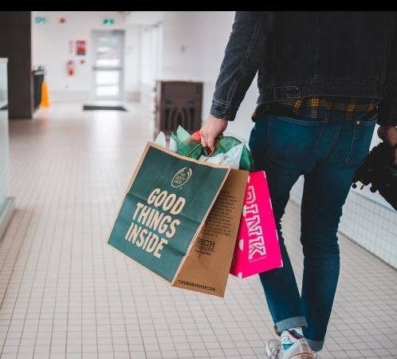
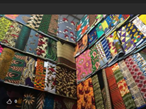
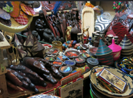

In the modern world, the concept of shopping has undergone a significant evolution. It is affected by convenience and innovation. With the ability to shop and buy goods from the comfort of our homes, e-commerce has become a mainstay in our lives. However, in the digital age, there is a growing demand for a platform that offers consumers a distinctive and personalised shopping experience in addition to connecting them with products. The "Mona Digital Platform" revolutionizes how we shop and interact with brands and vendors in this situation. In this article, I will iron out lots of benefits and reasons why businesses and brands should prioritize the Mona Local market.
Empowering Artisans and Entrepreneurs: Mona Digital Platform empowers artisans and entrepreneurs by providing them with a platform to reach a wider audience. It's an open ground for talented individuals to turn their passion into a thriving business. Your support directly contributes to the growth and success of these aspiring creators.
Community Engagement: Shopping on Mona isn't just about transactions; it's about building a sense of community. Connect with vendors, artisans, and other shoppers through discussion forums, live chats, and community events. This level of engagement fosters a unique sense of belonging and allows you to gain insights into the products you love.
Supporting Local Businesses: Mona Digital Platform isn't just another e-commerce platform; it's a community-driven marketplace that champions local businesses. You are actively supporting the expansion of small businesses and regional artisans by choosing to shop on Mona. Supporting neighbourhood businesses is crucial for the economic sustainability and development of a sense of community in this era where large corporations dominate many industries.
Finding Unique and Handcrafted Products: Mona Digital Platform stands out for its dedication to showcasing Unique and Handcrafted Products that you will not find in Mainstream Retail Stores. Mona gives talented artists and designers a platform to display their work in everything from handwoven textiles to artisanal jewellery. When you shop on Mona, you are investing in more than just the item you are purchasing.
Personalized Shopping Experience: Mona Digital Platform goes beyond the one-size-fits-all approach of traditional online shopping. Mona customizes your shopping experience to your preferences and interests using cutting-edge algorithms and user preferences. Your style will be taken into consideration when making recommendations, which makes shopping enjoyable in addition to being convenient.
Transparency and Trust: Trust is paramount when shopping online. Mona Digital Platform prioritizes transparency by offering detailed product descriptions, customer reviews, and ratings. You can make informed decisions and shop with confidence, knowing that you're getting exactly what you expect.
Supporting Diversity and Inclusivity: Mona Digital Platform celebrates diversity and inclusivity. You'll find a wide range of products from various cultures and backgrounds. It's a platform that fosters cultural exchange and encourages shoppers to explore and appreciate the world's rich tapestry of traditions and artistry.
Safe and Secure Transactions: At Mona, security comes first. Strong encryption and security protocols are put in place to protect your personal and financial data. Shop with us with confidence, and your privacy is protected.
Continuous Innovation: Mona Digital Platform is committed to staying at the forefront of e-commerce innovation. The platform constantly evolves, incorporating cutting-edge technology and user feedback to enhance your shopping experience. Expect regular updates and improvements that make your journey on Mona even better.
Conclusively, Mona Digital Platform is more than just an online marketplace; it is a movement that supports small businesses, honours creativity, and builds a sense of neighbourhood. When you shop on Mona, you consciously support small businesses, entrepreneurs, and artisans while also getting a unique and memorable shopping experience.
Shopping has become more transactional today, but the Mona Digital Platform restores the joy and community that it once did. It's a testament to the power of community, sustainability, and individuality in an age where these values are more important than ever. Join us on Mona and be part of a shopping revolution that puts people and their stories at the forefront.
In the modern world, a company's ability to reach customers online and maintain a strong online presence—be it for a hotel, restaurant, car rental agency, courier service, optical shop, school, bakery, or chemist—is crucial to its success. That is where Mona Digital Platform steps in, providing a special chance for vendors to broaden their reach, boost sales, and interact with a variety of clientele. In this blog post, we will look at how Mona Digital Platform can help a variety of vendors and why it is the best place to grow your company.
Hotels and Restaurants: Serving More Than Just Meals
Mona Digital Platform can be very beneficial to hotels and restaurants. Mona gives you a platform to advertise your services, whether you provide delectable food, cosy lodging, or both. Mona assists you in attracting the interest of travellers and foodies who are always looking for new experiences. To draw in more diners and visitors, you can advertise your menu, share high-quality photos, and offer special deals or packages.
Car Rentals: Drive Your Business Forward
It can be difficult to stand out in the crowd when there is such intense competition in the car rental industry. By enabling you to list your fleet of vehicles, provide alluring rental packages, and reach a larger audience, Mona Digital Platform gives you a competitive edge. By enabling you to list your fleet of vehicles, provide alluring rental packages, and reach a larger audience, Mona Digital Platform gives you a competitive edge. Mona assists you in establishing connections with people looking for dependable transportation, whether they need a vehicle for a weekend getaway or a long-term rental.
Delivering Convenience through Courier Services
The importance of convenience and dependability cannot be overstated in the fast-paced It is simple for businesses and individuals to find the ideal courier partner thanks to Mona Digital Platform's ability for courier companies to advertise their services and rates. A seamless booking process, real-time tracking, and customer reviews improve the customer experience, which fosters loyalty and repeat business.
A Clear Vision for Success for Optical Stores
By showcasing their eyewear collections, providing virtual try-ons, and offering professional eye care advice, optical stores can profit from Mona. You can reach a wider audience with Mona, especially those looking for fashionable frames, specialty eyewear, or prescription lenses. Customer reviews and comprehensive product descriptions aid in the decision-making process for consumers.
Schools: Educating the Future
Mona Digital Platform is an avenue for educational institutions to advertise their courses, programs, and extracurricular activities. Parents and prospective students can easily locate details about your school's programs, personnel, settings, and admissions policies. Hosting virtual tours or webinars can promote trust and offer insightful information.
Bakeries: Sweeten the Deal
Mona Digital Platform provides a venue for bakeries to display their mouthwatering treats, unique cakes, and artisanal bread. To emphasize the aesthetic appeal of your products, use high-quality images and mouthwatering descriptions. Customers looking for sweet treats are engaged with special promotions for special occasions like holidays, birthdays, or other events.
Chemists: Delivering Health and Wellness
Mona allows pharmacies and chemists to connect with people looking for health and wellness products. You can establish yourself as a reliable source for customers who are concerned about their health by listing a variety of products, from over-the-counter medicines to personal care items. To improve accessibility for those in need, Mona also gives customers the choice of ordering prescription drugs online.
Why choose the Mona Digital Platform?
A wider audience with a more diverse demographic: Mona Digital Platform puts you in touch with a large, potentially global, customer base. Your brand will gain more visibility, and your customer acquisition will increase as well.
User-Friendly Platform: Mona provides a straightforward and user-friendly platform that is simple to use for both vendors and customers. You can easily create and manage your listings.
Personalized Marketing: Mona assists you in customizing your marketing initiatives with data-driven insights. To improve your offerings, you can target particular demographics and monitor customer behaviour.
Secure and Reliable Transactions: Mona places a high priority on security. To guarantee safe and secure transactions for both vendors and customers, the platform makes use of strong encryption and security measures.
Customer Engagement: Use Mona's messaging and chat features to communicate directly with your customers. Build enduring relationships by responding to questions and resolving issues.
Finally, rather than just being an e-commerce platform, Mona Digital Platform is a vibrant market that empowers vendors to thrive in this digital age. Your business is a courier service, optical shop, school, and bakery, regardless of whether you manage a hotel, restaurant, or car rental service. Mona provides the resources and reach you need to succeed, whether you are a chemist or running any other type of business.
Join Mona Digital Platform now and explore the limitless opportunities for growing your company, attracting new clients, and building your brand. Do not pass up this chance to grow your business to new heights in the contemporary digital marketplace. Mona is the key to unlocking your business's full potential
Few places provide a more genuine and immersive experience when it comes to getting to know a city's true character than its local markets. Rwanda's capital city, Kigali, is no different. Kigali, which is located in the centre of East Africa, has a vibrant local market scene that is representative of the history, culture, and entrepreneurial spirit of the nation. We will take you on a tour of Kigali's bustling local markets in this blog post so you can get a taste of the country's vibrant customs, foods, and colours.
Kimironko Market: A Hub of Color and Culture
One of Kigali's most well-known and active markets is Kimironko Market. This enormous market, which can be found in the Kimironko neighbourhood, is a hive of activity from dawn until dusk. It's a place where locals and tourists come together to explore the wide array of goods on offer.
A rainbow of colours will greet you as you stroll through the market's congested lanes. Kitenge, or brightly coloured textiles, are displayed in stalls and represent the traditional textiles of Rwanda. Beautiful clothing is made from these materials, and there are tailors on-site who can make a unique outfit just for you.

Kimironko Market is also a food lover's paradise. The aroma of freshly grilled meats, the colourful array of fruits and vegetables, and the chitchat of the vendors all contribute to the intoxicating ambience. Do not forget to sample regional specialties like "ibitoke" (grilled plantains) and "brochettes" (kebabs), which are made right in front of you.
Nyamirambo Women's Center: Empowering Women Through Craft
The Nyamirambo Women's Center is not just a market; it's a testament to the resilience and creativity of Rwandan women. Located in the vibrant Nyamirambo neighbourhood, this centre is a social enterprise that empowers local women through craft and commerce.
Here, you'll find a wide range of handmade products, from intricately woven baskets to colourful jewellery. Each item tells a story, and the women who create them are eager to share their narratives with visitors. Not only can you purchase unique souvenirs, but you can also learn about the centre's mission and the positive impact it has on the community.
Caplaki Craft Village: A Treasure Trove of African Art
In the centre of Kigali, there is a hidden treasure called Caplaki Craft Village. Lovers and collectors of art will find this outdoor market to be a haven. A stunning variety of African arts and crafts, including everything from traditional sculptures and masks to modern paintings, can be found at the market.

What sets Caplaki apart is its dedication to promoting local artisans and preserving traditional Rwandan craftsmanship. Visitors can witness artists at work, providing an intimate look into the creative process. Whether you're looking for a one-of-a-kind piece for your home or a unique gift, Caplaki Craft Village has something for everyone.
Gikondo Market: A Culinary Adventure
Gikondo Market is a haven for foodies looking to explore Rwanda's culinary traditions. This bustling market is a sensory overload, with stalls offering an abundance of fresh produce, spices, and traditional ingredients.
One of the highlights of Gikondo Market is the "isombe," a fermented cassava dish that's a staple in Rwandan cuisine. You can also find an assortment of tropical fruits like passion fruit, mangoes, and jackfruit. Don't forget to sample the local spices and chilli pastes, which add depth and flavour to Rwandan dishes.
Kimisagara Market: A Glimpse into Everyday Life
For a more authentic and local experience, Kimisagara Market offers a glimpse into the everyday lives of Kigali's residents. Located in the bustling Kimisagara neighbourhood, this market is less touristy than some of the others, making it an ideal place to interact with locals.
Kimisagara Market is where you'll find daily necessities, from fresh produce and household goods to clothing and electronics. It's a place where the rhythms of daily life unfold, and you can strike up conversations with friendly vendors and shoppers.
Kigali's local markets are more than just places to shop; they are windows into the soul of Rwanda. Each market offers a unique experience, whether you're interested in traditional crafts, mouthwatering cuisine, or simply immersing yourself in the vibrant culture of this beautiful country.
As you explore these markets, take the time to engage with the people you meet. You'll discover that the warm smiles and welcoming spirit of the Rwandan people are as much a part of the experience as the products themselves. So, next time you find yourself in Kigali, make sure to set aside some time to wander through these local markets and create lasting memories of your journey through Rwanda's capital.
Written by Kigali group
Contact: Kigali@connect.com
Home page